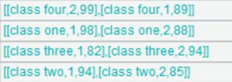
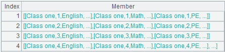
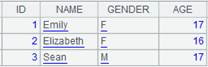

Description:
Query data and return result as a cursor or a table sequence.
Syntax:
|
ali_query(ali_open, tableName, keyName, keyValue, selectCol, filter) |
Return a table sequence. |
|
ali_query(ali_open, tableName, keyName, startValue:endValue, selectCol, filter) |
Query a certain part of a table and return the result as a cursor. |
Note:
External library function. With a composite primary key, the format of the parameter startValue:endValue will be [startKey1,startKey2]:[endKey1:endKey2], like [3,"003"]:[5,"009"]. However, if there is no such record as [3,"003"], but only the record [3,"002"]; then the latter will be used according to the rule of Alibaba Cloud.
Parameter:
|
ali_open |
An object to be connected on Alibaba Cloud. |
|
tableName |
A table name. |
|
keyName |
For a one-field key, the parameter is the key name; for a composite key, it is a sequence consisting of field names. |
|
keyValue |
Primary key value. If it is a single value or a sequence of values, query one record; if it is a sequence or a sequence of sequences, perform batch query on multiple records. |
|
startValue |
The starting value of the primary key values. When it is null or omitted, it represents an infinitesimal; and the colon shouldn’t be omitted. |
|
endValue |
The ending value of the primary key values. When it is null or omitted, it represents an infinite value; and the colon shouldn’t be omitted. |
|
selectCol |
The column(s) to be returned. The parameter will be a column name when the target is a single column; and a sequence of column names when multiple columns are desired. All fields will be selected when the parameter isn’t supplied. |
|
filter |
A filtering expression, which can be omitted. In the expression, following operators are allowed: Logical operators including &&, ||, and ! Relational operators including >, >=, ==, <, <=, and != The format of the expression is like this: <field name> relational operator <value expression> For instance: col1 > arg1 && col1 < arg2 || col2 != arg3 A boolean field needs to be written in a format like this: <boolean field == false>, instead of <!boolean field>. |
Option:
|
@x |
The option closes the connection to Alibaba Cloud after the query finishes. |
|
@z |
The option initiates a query on a certain part of data in reverse order. |
Return value:
Cursor or table sequence.
Example:
|
|
A |
|
|
1 |
=ali_open("http://test.ots.aliyuncs.com","LTAIXZNG5zzSPHTQ","sa","test") |
|
|
2 |
=ali_query(A1,"test",["id1","id2"],[1,"10001"]:[10,"70001"], ["id1","id2","f1","f2"],f1>=2000.0) |
 |
|
3 |
=ali_query(A1, "test",["id1","id2"],,,f1>=2000.0&&f1<=10000.0&&(id2=="10003"||id2=="10004"||id2=="10005")) |
The query doesn’t supply parameters startValue:endValue and selectCol, and uses a composite filtering. |
|
4 |
=ali_query@z(A1,"test",["id1","id2"],[10,"70001"]:[1,"10001"],,f1>=2000.0 && f1<=10000.0 && (id2=="10003" || id2=="10004" || id2=="10005")) |
 |
|
5 |
=ali_query@x(A1,"test",["id1","id2"],[3,"10003"],,) |
 |
Related functions:
ali_open()